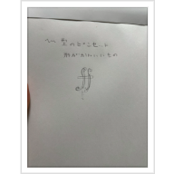
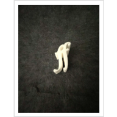
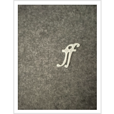
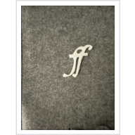

かわせみのページ
レーザーカッターを使って
フォルティシモ型のピンセット
私は、フォルティシモ型のピンセットを作りました。
今回の課題のテーマであるピンセットを進化させるということを考えたときに、～型というのが作りやすいのではないかと考えたからです。
まず最初に大まかなスケッチの図です。

イメージとしては、フォルテの音符の下部二つで挟むイメージです。
最初の試作

物は試しということで早速fusion360で設計したピンセットを出してみました。
太すぎて下が動かなかったので、ピンセットというよりかは単なるフォルティシモのオブジェになってしまいました（笑）
反省点としては、全体的に厚すぎたことです。考えてみたら分厚いピンセットは見たことないですね。
改良してみた。
太いからダメならば全体を細く小さくしてみようと改良をしてみました。

すると、下の部分を動かせるようになりました。
あとはこれをサイズを調節すればピンセットに近づける！
二度目の改良

次の改良で、下の部分を動かせるようになりました。
まだ改善点はあるが、限られた時間でできた最終形態になります。
挟むところが狭めなので、楽譜などの紙を掴める、挟めるピンセットです。